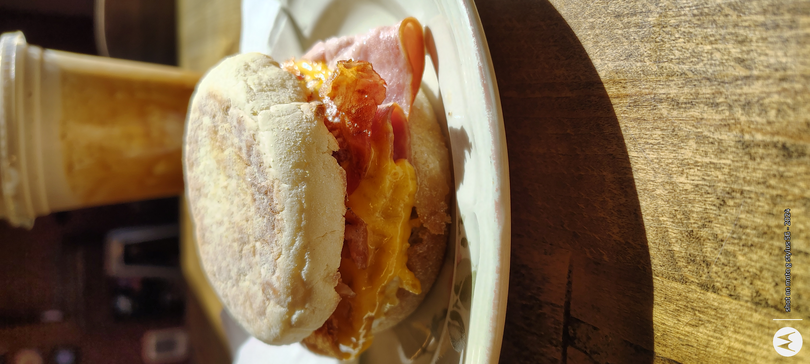

Featured experience
This is the hook.
This is not about dumping info. This is about making someone feel like they just discovered a local place worth visiting, ordering from, and telling other people about.

Turning a cafe visit into an experience layer
Instead of a customer seeing a cafe once and forgetting it, this gives the business a premium digital presence that extends the atmosphere, highlights top items, and increases perceived value.
- Feature signature products with premium visuals
- Guide first-time customers toward easy winning picks
- Create a cleaner story from curiosity to purchase
Bakery case
Visual abundance sells.
The bakery case is one of the strongest in-store assets. It instantly communicates freshness, options, comfort, and local personality.


Story layer
“This is the kind of place people want to tell other people about.”
That’s the leverage point. ScanCraft does not need to invent a fake identity here. It simply captures what already exists and sharpens it into something that feels more premium, more intentional, and easier to remember.
1stVisual impression gets elevated before anyone explains a thing.
2ndFeatured items steer first-time customers toward strong choices.
3rdThe brand stays alive after the physical visit ends.
Proof of concept
This already feels real.
These were simple in-store captures, not a full media production. And it still presents strong. That’s exactly why this concept works.
Professional presentation
A cafe that feels more premium without needing to rebuild operations, staff, or identity.
Confidence in ordering
They can see the products, feel the atmosphere, and trust the experience faster.
Physical to digital works
Especially when the food, visuals, and vibe already carry emotional weight in person.
ScanCraft close
Imagine this for your business.
This is what happens when your physical experience meets a digital layer designed to convert attention into action. Better presentation. Stronger perceived value. Cleaner storytelling. A smoother path from curiosity to purchase.
ScanCraft • Premium digital experience layer for physical businesses